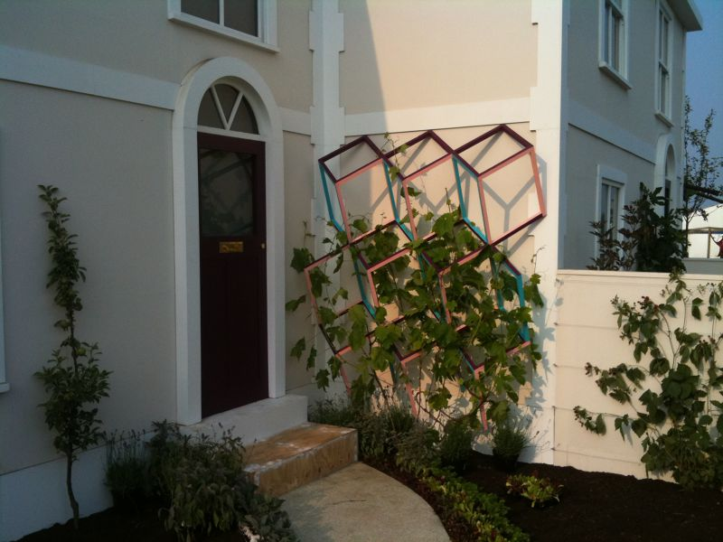
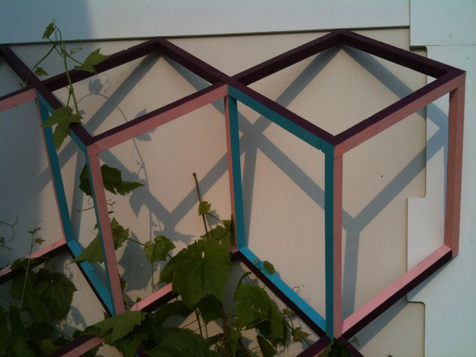
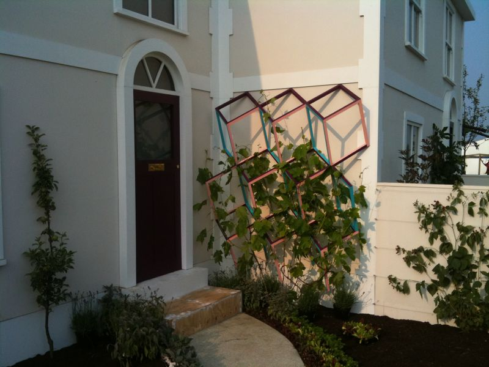
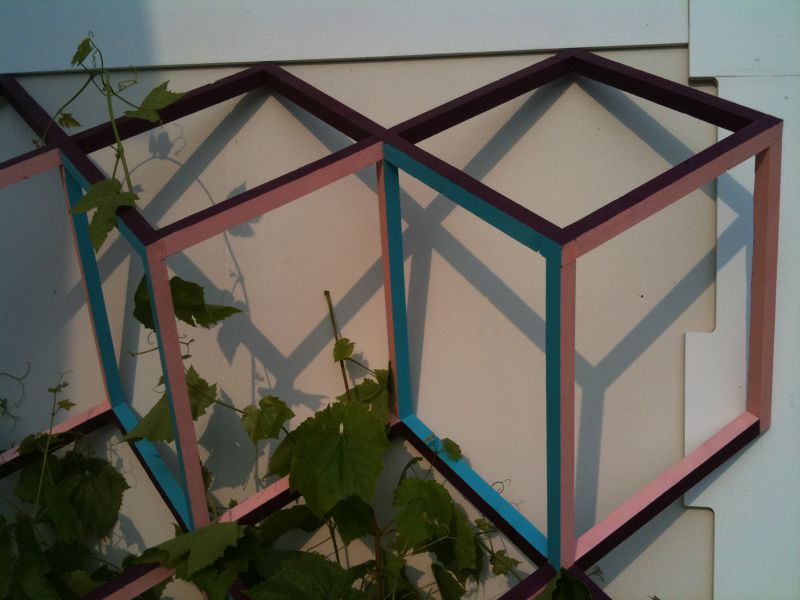

Matt asked me if I would be interested in building a trelace to support the vine which was to located next to the doorway on a side wall. I took a very recognisable pattern and made it three dimensional, adding colour to intensify each shape. Once on the wall and with the vine in place the shadows intensify the already unique structure.
 


